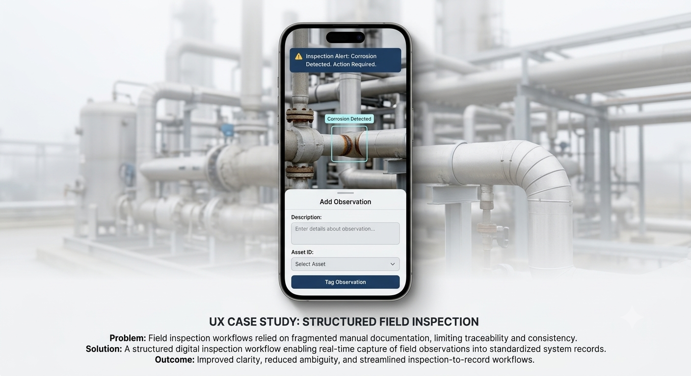
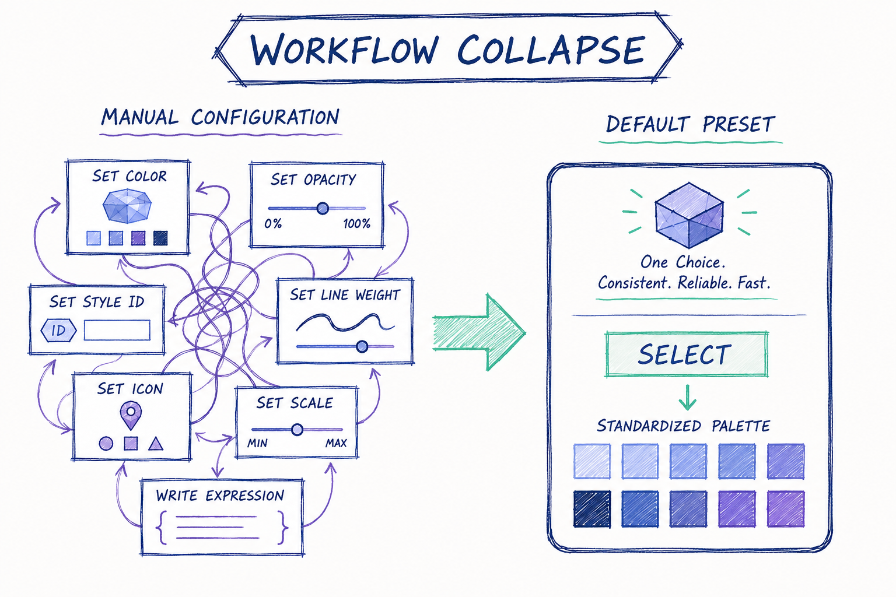

Systems Design Portfolio
I design decision systems across financial, utility, and high-compliance environments — translating complex workflows into structured, usable interfaces.
Selected Systems
Financial Systems (Truist)
Identity, onboarding, and authentication systems supporting large-scale consumer banking workflows across legacy and modern infrastructure.
Utility Systems (EPRI)
Field inspection and operational workflow digitization for regulated utility infrastructure.

Systems & Compliance (JHU APL)
Structured risk assessment and compliance-driven decision workflows in high-reliability environments.

Geospatial Interface System
A scalable interface model that transforms complex geospatial data ingestion into streamlined, preset-driven decision workflows.
